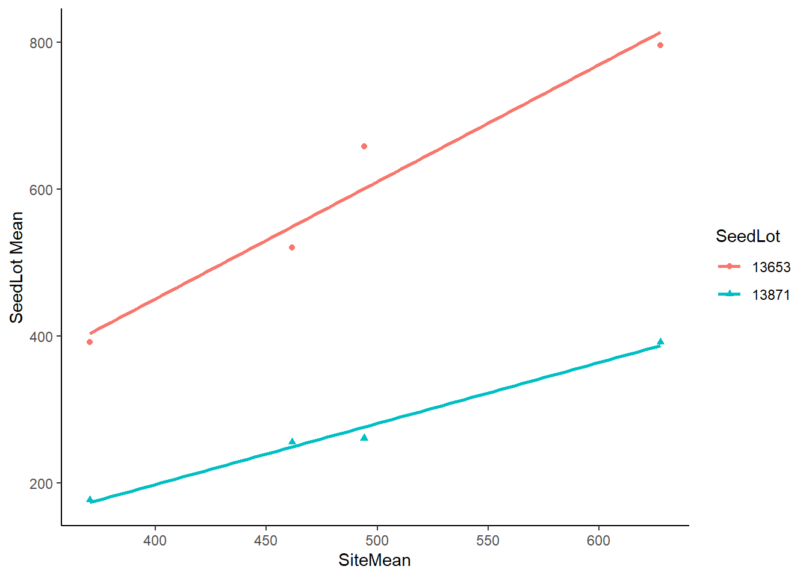
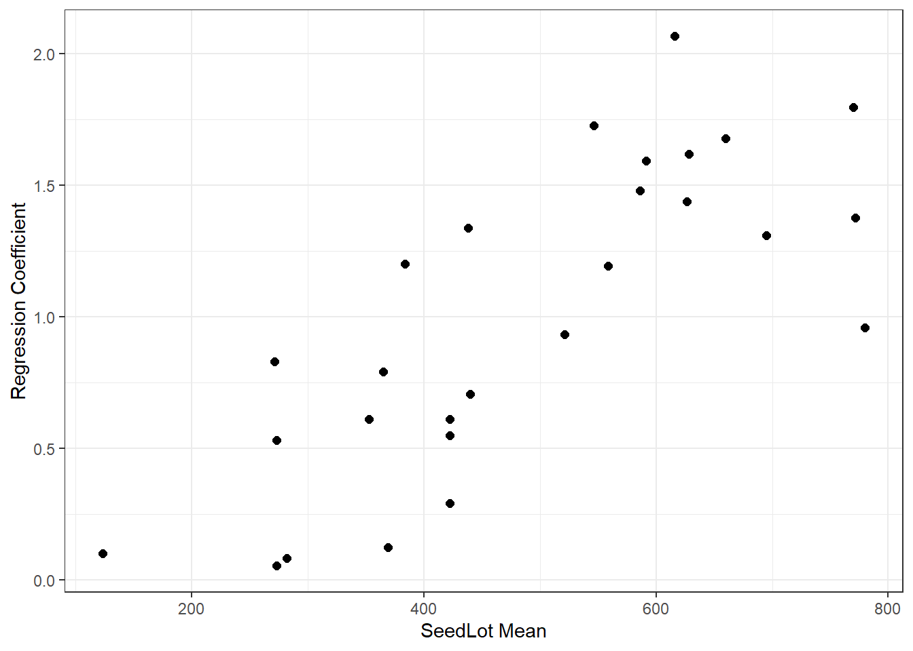

library(car)
library(dae)
library(dplyr)
library(emmeans)
library(ggplot2)
library(lmerTest)
library(magrittr)
library(predictmeans)
data(DataExam5.1)
# Pg.68
fm5.4 <-
lm(
formula = ht ~ site*seedlot
, data = DataExam5.1
)
# Pg. 73
anova(fm5.4)
Analysis of Variance Table
Response: ht
Df Sum Sq Mean Sq F value Pr(>F)
site 3 919585 306528 NaN NaN
seedlot 26 3176289 122165 NaN NaN
site:seedlot 78 707957 9076 NaN NaN
Residuals 0 0 NaN
# Pg. 73
emmeans(object = fm5.4, specs = ~ site)
site emmean SE df lower.CL upper.CL
Ratchaburi 462 NaN 0 NaN NaN
Sai Thong 628 NaN 0 NaN NaN
Si Sa Ket 494 NaN 0 NaN NaN
Sakaerat 370 NaN 0 NaN NaN
Results are averaged over the levels of: seedlot
Confidence level used: 0.95
emmeans(object = fm5.4, specs = ~ seedlot)
seedlot emmean SE df lower.CL upper.CL
13877 365 NaN 0 NaN NaN
13866 353 NaN 0 NaN NaN
13689 559 NaN 0 NaN NaN
13688 546 NaN 0 NaN NaN
13861 627 NaN 0 NaN NaN
13854 628 NaN 0 NaN NaN
13684 660 NaN 0 NaN NaN
13864 422 NaN 0 NaN NaN
13863 586 NaN 0 NaN NaN
13683 770 NaN 0 NaN NaN
13681 695 NaN 0 NaN NaN
14175 438 NaN 0 NaN NaN
14660 521 NaN 0 NaN NaN
13653 592 NaN 0 NaN NaN
13846 440 NaN 0 NaN NaN
13621 384 NaN 0 NaN NaN
13871 272 NaN 0 NaN NaN
13519 422 NaN 0 NaN NaN
13514 369 NaN 0 NaN NaN
13148 273 NaN 0 NaN NaN
13990 282 NaN 0 NaN NaN
14537 780 NaN 0 NaN NaN
14106 772 NaN 0 NaN NaN
12013 616 NaN 0 NaN NaN
14130 422 NaN 0 NaN NaN
14485 123 NaN 0 NaN NaN
11935 273 NaN 0 NaN NaN
Results are averaged over the levels of: site
Confidence level used: 0.95
ANOVAfm5.4 <- anova(fm5.4)
ANOVAfm5.4[4, 1:3] <- c(208, 208*1040, 1040)
ANOVAfm5.4[3, 4] <- ANOVAfm5.4[3, 3]/ANOVAfm5.4[4, 3]
ANOVAfm5.4[3, 5] <-
pf(
q = ANOVAfm5.4[3, 4]
, df1 = ANOVAfm5.4[3, 1]
, df2 = ANOVAfm5.4[4, 1]
, lower.tail = FALSE
)
# Pg. 73
ANOVAfm5.4
Analysis of Variance Table
Response: ht
Df Sum Sq Mean Sq F value Pr(>F)
site 3 919585 306528 NaN NaN
seedlot 26 3176289 122165 NaN NaN
site:seedlot 78 707957 9076 8.7273 < 0.00000000000000022 ***
Residuals 208 216320 1040
---
Signif. codes: 0 '***' 0.001 '**' 0.01 '*' 0.05 '.' 0.1 ' ' 1
# Pg. 80
DataExam5.1 %>%
filter(seedlot %in% c("13653", "13871")) %>%
ggplot(
data = .
, mapping = aes(
x = sitemean
, y = ht
, color = seedlot
, shape = seedlot
)
) +
geom_point() +
geom_smooth(
method = lm
, se = FALSE
, fullrange = TRUE
) +
theme_classic() +
labs(
x = "SiteMean"
, y = "SeedLot Mean"
)
Tab5.10 <-
DataExam5.1 %>%
summarise(Mean = mean(ht), .by = seedlot) %>%
left_join(
DataExam5.1 %>%
nest_by(seedlot) %>%
mutate(fm1 = list(lm(ht ~ sitemean, data = data))) %>%
summarise(Slope = coef(fm1)[2])
, by = "seedlot"
)
# Pg. 81
Tab5.10
seedlot Mean Slope
1 11935 272.75 0.53017435
2 14485 123.00 0.10170020
3 14130 422.25 0.54976906
4 12013 616.25 2.06723798
5 14106 771.75 1.37751724
6 14537 779.75 0.96012145
7 13990 281.75 0.08298796
8 13148 273.25 0.05333546
9 13514 368.75 0.12307233
10 13519 422.00 0.29211648
11 13871 271.50 0.83048203
12 13621 383.75 1.20085607
13 13846 440.00 0.70691001
14 13653 591.50 1.59434380
15 14660 521.25 0.93353990
16 14175 438.00 1.33770745
17 13681 695.00 1.30937837
18 13683 769.75 1.79629735
19 13863 586.25 1.48034730
20 13864 422.50 0.61113857
21 13684 660.00 1.67860570
22 13854 628.00 1.62026853
23 13861 626.75 1.43784662
24 13688 546.50 1.72717652
25 13689 558.75 1.19475332
26 13866 352.75 0.61009734
27 13877 364.75 0.79221858
ggplot(data = Tab5.10, mapping = aes(x = Mean, y = Slope)) +
geom_point(size = 2) +
theme_bw() +
labs(
x = "SeedLot Mean"
, y = "Regression Coefficient"
)
DevSS1 <-
DataExam5.1 %>%
nest_by(seedlot) %>%
mutate(fm1 = list(lm(ht ~ sitemean, data = data))) %>%
summarise(SSE = anova(fm1)[2, 2]) %>%
ungroup() %>%
summarise(Dev = sum(SSE)) %>%
as.numeric()
ANOVAfm5.4[2, 2]
[1] 3176289
length(levels(DataExam5.1$SeedLot))
[1] 0
ANOVAfm5.4.1 <-
rbind(
ANOVAfm5.4[1:3, ]
, c(
ANOVAfm5.4[2, 1]
, ANOVAfm5.4[3, 2] - DevSS1
, (ANOVAfm5.4[3, 2] - DevSS1)/ANOVAfm5.4[2, 1]
, NA
, NA
)
, c(
ANOVAfm5.4[3, 1]-ANOVAfm5.4[2, 1]
, DevSS1
, DevSS1/(ANOVAfm5.4[3, 1]-ANOVAfm5.4[2, 1])
, DevSS1/(ANOVAfm5.4[3, 1]-ANOVAfm5.4[2, 1])/ANOVAfm5.4[4, 3]
, pf(
q = DevSS1/(ANOVAfm5.4[3, 1]-ANOVAfm5.4[2, 1])/ANOVAfm5.4[4, 3]
, df1 = ANOVAfm5.4[3, 1]-ANOVAfm5.4[2, 1]
, df2 = ANOVAfm5.4[4, 1]
, lower.tail = FALSE
)
)
, ANOVAfm5.4[4, ]
)
rownames(ANOVAfm5.4.1) <-
c(
"Site"
, "seedlot"
, "site:seedlot"
, " regressions"
, " deviations"
, "Residuals"
)
# Pg. 82
ANOVAfm5.4.1
Analysis of Variance Table
Response: ht
Df Sum Sq Mean Sq F value Pr(>F)
Site 3 919585 306528 NaN NaN
seedlot 26 3176289 122165 NaN NaN
site:seedlot 78 707957 9076 8.7273 < 0.00000000000000022 ***
regressions 26 308503 11866
deviations 52 399454 7682 7.3863 < 0.00000000000000022 ***
Residuals 208 216320 1040
---
Signif. codes: 0 '***' 0.001 '**' 0.01 '*' 0.05 '.' 0.1 ' ' 1